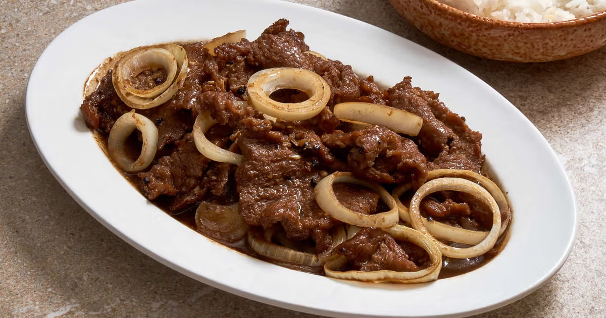

Bistek Tagalog
Bistek Tagalog is the Filipino version of beef steak, originating from the Tagalog region. It is a brilliant display of simplicity, relying heavily on a marinade of soy sauce and fresh calamansi (native citrus). The thinly sliced beef is pan-fried, then simmered in its own marinade, and finally topped with loads of lightly cooked white or red onion rings. The resulting sauce is intensely savory and tangy, demanding lots of rice.

Gather
Ingredients
- Beef sirloin, sliced very thinly
- Soy sauce
- Calamansi juice
- Garlic, minced
- Large white or red onions, sliced into thick rings
- Black pepper, ground
- Water
- Cooking oil
Make it
Recipe
- Marinate the thinly sliced beef in soy sauce, calamansi juice, minced garlic, and ground black pepper for at least an hour (overnight is best).
- Heat oil in a pan. Briefly pan-fry the onion rings until slightly soft but still crunchy. Remove the onions and set aside.
- In the same pan, fry the marinated beef slices in batches just until browned (do not overcook or they will become tough). Remove the beef and set aside.
- Pour the remaining marinade and a little water into the pan. Bring to a boil.
- Return the beef slices to the pan and simmer for 5 to 10 minutes until the meat is tender and the sauce reduces.
- Top with the cooked onion rings right before turning off the heat.
- Serve hot with rice.